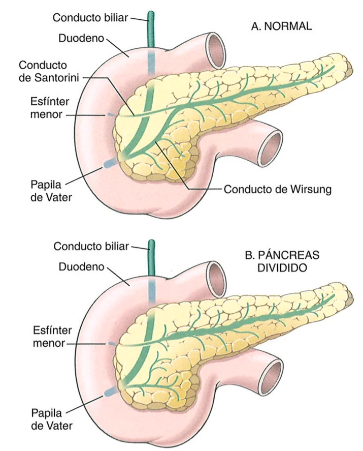
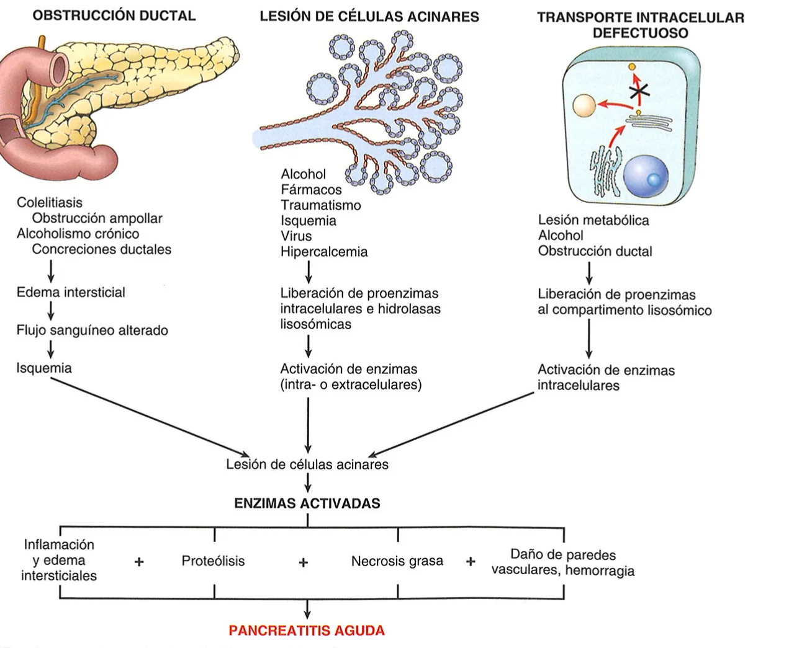
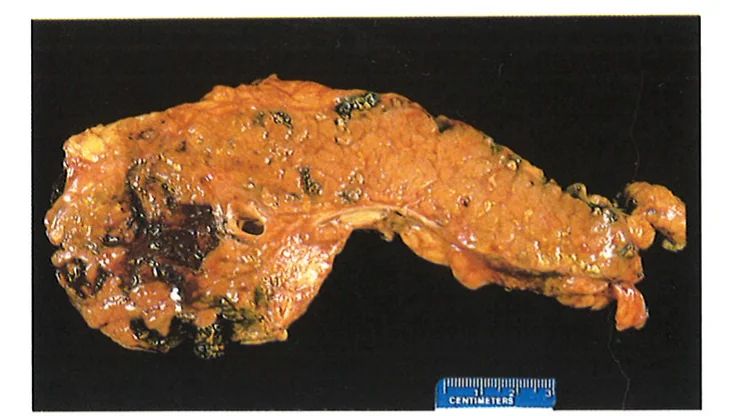
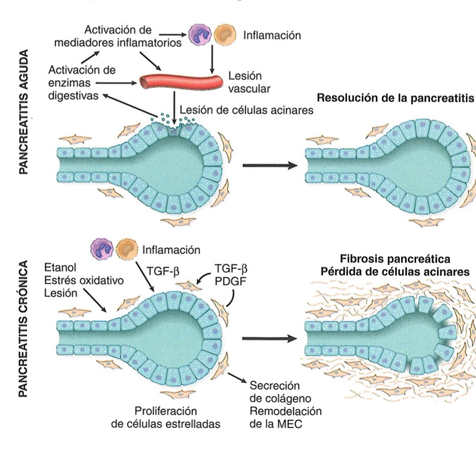
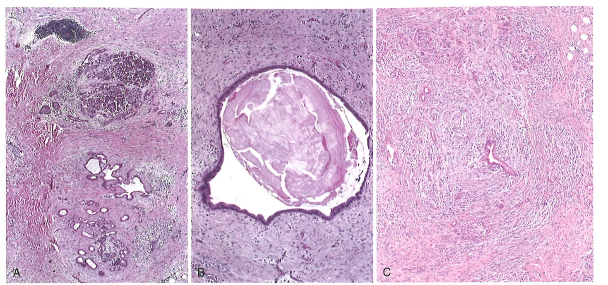
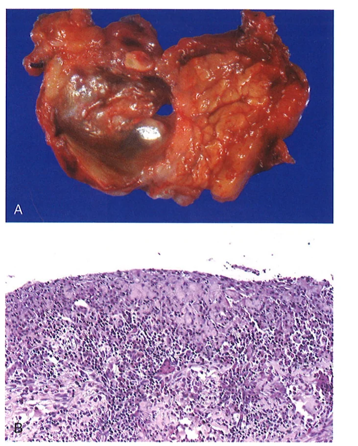
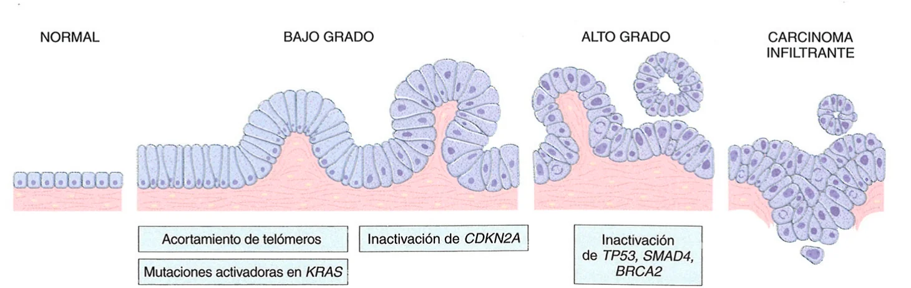
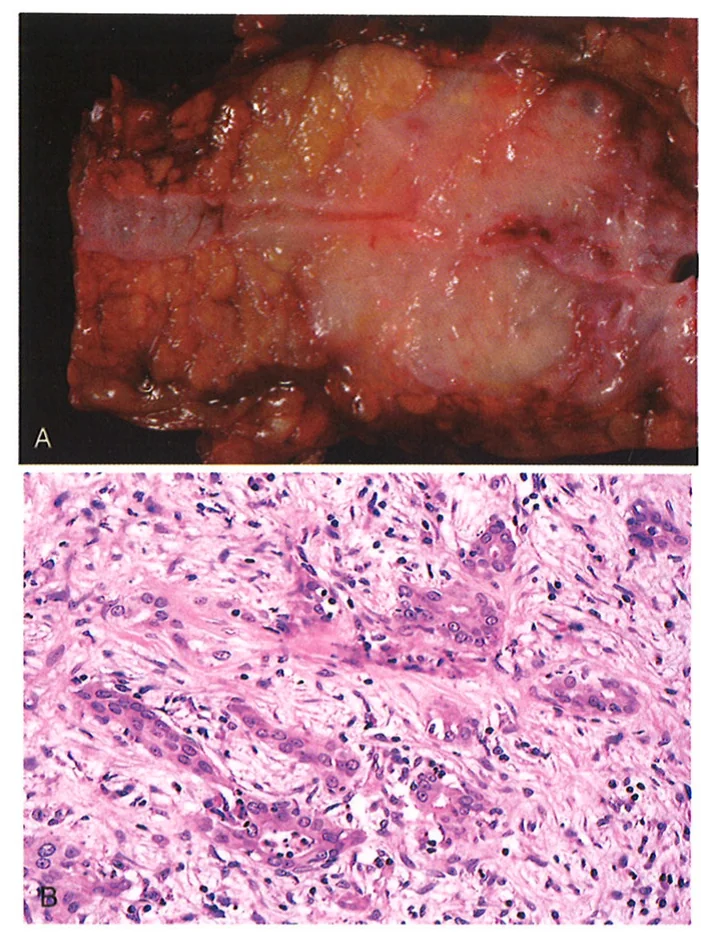

Qué cubre esta guía
Las citas p. N corresponden a la página impresa del libro. El texto se contrastó con el OCR del capítulo.
Lo esencial en 60 segundos
- La lipasa sérica es el marcador más específico y sensible de la pancreatitis aguda (persiste 8-14 días); la amilasa se normaliza en 3-5 días p. 885.
- Pancreatitis hereditaria: PRSS1 (ganancia de función, autosómica dominante), SPINK1 (pérdida de función, recesiva) y CFTR (secreciones espesadas); el rasgo común es la actividad de tripsina aumentada, y PRSS1 eleva el riesgo de cáncer pancreático en 40% p. 884.
- En la pancreatitis crónica predominan las citocinas fibrógenas TGF-β y PDGF, que activan células estrelladas pancreáticas y producen fibrosis irreversible con pérdida acinar p. 886.
- Perfiles mutacionales de los quistes: serosa = VHL; mucinosa = KRAS y estroma ovárico (95% mujeres); NMPI = GNAS en dos tercios; sólida-seudopapilar = CTNNB1 exclusivo p. 889-890.
- Secuencia del carcinoma pancreático: KRAS mutado y telómeros cortos, luego CDKN2A, y en la PanIN de alto grado TP53, SMAD4 y BRCA2; KRAS mutado en más del 90% de los casos p. 890-891.
- Signos de carcinoma de cabeza: ictericia obstructiva indolora con signo de Courvoisier; el signo de Trousseau (tromboflebitis migratoria) aparece en el 10%; más del 80% es irresecable al diagnóstico y la supervivencia a 5 años es del 10% p. 893.
Ideas clave
- El páncreas exocrino es el 80-85% del órgano (células acinares con gránulos de cimógenos: tripsinógeno, quimotripsinógeno, procarboxipeptidasa, proelastasa, calicreiógeno, fosfolipasas A y B); el endocrino (1 millón de islotes) es solo el 1-2% de la masa p. 881.
- Las enzimas se sintetizan como proenzimas inactivas activadas por la tripsina en el duodeno (enteropeptidasa duodenal); las células acinares y ductales secretan inhibidores de tripsina (SPINK1). La pancreatitis aparece cuando estos mecanismos protectores se alteran o son superados p. 882.
- La pancreatitis aguda (10-20/100.000/año en países occidentales) es causada en ~80% por enfermedad de vías biliares y alcoholismo; su patogenia tiene tres vías iniciadoras: obstrucción ductal, lesión primaria de células acinares y transporte intracelular defectuoso de proenzimas p. 882-883.
- La lipasa sérica es el marcador más específico y sensible (elevada 8-14 días); la amilasa tiene semivida corta y se normaliza en 3-5 días p. 885.
- En la pancreatitis necrosante aguda, el 40-60% de los residuos acelulares se infecta por gramnegativos intestinales; el 5% de los casos graves muere en la primera semana p. 885.
- La pancreatitis crónica es destrucción irreversible del parénquima exocrino con fibrosis y, en fases avanzadas, pérdida endocrina; su causa más común es el alcohol y hasta el 25% de los casos tienen base genética p. 886.
- En la pancreatitis crónica predominan las citocinas fibrógenas (TGF-β, PDGF), que activan células estrelladas pancreáticas → colágeno y fibrosis, a diferencia de la pancreatitis aguda p. 886.
- Pancreatitis autoinmunitaria tipo 1: sistémica relacionada con IgG, células plasmáticas IgG4+, fibrosis estoriforme y flebitis obliterante; tipo 2: limitada al páncreas (salvo colitis ulcerosa), con lesiones epiteliales granulocíticas ductales y sin IgG4 abundante. Ambas simulan carcinoma y responden a esteroides p. 886-887.
- Los seudoquistes son el 75% de los quistes pancreáticos (sin revestimiento epitelial, 2-30 cm, tras pancreatitis aguda o traumatismo); solo el 5-15% de los quistes pancreáticos son neoplásicos p. 888.
- Neoplasias quísticas: serosa (benigna, VHL en 3p), mucinosa (95% en mujeres, precursora de carcinoma, estroma "ovárico"), NMPI (conductos grandes, hombres, GNAS en dos tercios) y sólida-seudopapilar (mujeres jóvenes, CTNNB1/β-catenina) p. 888-890.
- El carcinoma pancreático es la tercera causa de muerte por cáncer en EE. UU., con supervivencia a 5 años del 10%; >90% surge de una PanIN; KRAS mutado en >90%, TP53 70-75%, SMAD4 55%, CDKN2A 30% p. 890-891.
- Toda persona con cáncer pancreático debe estudiarse en línea germinal: ~10% tiene mutación deletérea; BRCA2 es la causa más común de cáncer pancreático familiar p. 892.
Introducción
El páncreas del adulto es un órgano retroperitoneal transverso, desde el asa en C del duodeno hasta el hilio del bazo. Se forma por la fusión de las evaginaciones dorsal y ventral del intestino anterior: el primordio dorsal da el cuerpo, la cola, la cara superior/anterior de la cabeza y el conducto accesorio de Santorini; el ventral origina la parte posterior/inferior de la cabeza y drena por el conducto principal de Wirsung a la papila de Váter p. 881.


Anomalías congénitas
- Páncreas dividido: anomalía congénita más frecuente (3-10%); falta de fusión de los sistemas ductales fetales, de modo que la mayor parte de la glándula (primordio dorsal) drena por una papila menor de pequeño calibre. Se ha planteado que el drenaje inadecuado por la papila menor, en especial con defectos genéticos adicionales, predispone a pancreatitis crónica (dato controvertido) p. 881.
- Páncreas anular: banda de tejido pancreático normal que rodea la segunda porción del duodeno; puede causar obstrucción duodenal p. 881.
- Páncreas ectópico: ~2% de las autopsias; localizaciones más habituales: estómago y duodeno, seguidos de yeyuno, divertículos de Meckel e íleon. Hallazgo incidental, con acinos, glándulas y a veces islotes normales; ocasionalmente dolor por inflamación local o sangrado mucoso p. 881-882.
- Agenesia: muy ocasional; algunos casos por mutaciones homocigóticas en línea germinal de PDX1, factor de transcripción de la homeocaja esencial para el desarrollo pancreático p. 882.
Pancreatitis aguda
Lesión e inflamación reversibles del parénquima por tóxicos (alcohol), obstrucción ductal (cálculos), defectos genéticos, lesión vascular o infecciones. Incidencia anual de 10-20/100.000 en países occidentales; vías biliares y alcoholismo causan ~80% de los casos. Relación hombre:mujer 6:1 en alcohólicos y 1:3 en litiasis biliar; cálculos presentes en 35-60% de los pacientes, y ~5% de los litiasicos desarrolla pancreatitis biliar p. 882.
Patogenia: autodigestión enzimática
- La activación inapropiada de tripsina activa profosfolipasa (degrada células grasas) y proelastasa (daña fibras elásticas vasculares), y activa en sangre coagulación, complemento, calicreína y fibrinólisis; la inflamación y trombosis de pequeños vasos amplifican la activación enzimática p. 883.
- Tres vías iniciadoras (fig. 19.2): p. 883.
- Obstrucción ductal: cálculos y barro biliar, neoplasias periampulares, coledococeles, parásitos (Ascaris lumbricoides, Clonorchis sinensis) y posiblemente páncreas dividido. Aumenta la presión ductal y acumula líquido rico en enzimas; la lipasa (única secretada en forma activa) produce necrosis grasa; la muerte de adipocitos genera señales de "peligro" detectadas por células estrelladas y leucocitos → mediadores proinflamatorios → fuga microvascular, edema, isquemia acinar p. 883.
- Lesión primaria de células acinares: estrés oxidativo y radicales libres → oxidación de lípidos de membrana y activación de AP1 y NF-κB, con quimiocinas que atraen células mononucleares. El calcio regula la tripsina: calcio alto favorece su autoactivación; calcio bajo favorece su autodegradación p. 883.
- Transporte intracelular defectuoso: proenzimas derivadas anómalamente a lisosomas (catepsinas), con activación y rotura lisosomal; no está claro su papel en la pancreatitis aguda humana p. 884.

Figura 19.2. Tres vías propuestas para la patogenia de la pancreatitis aguda: obstrucción ductal, lesión de células acinares y transporte intracelular defectuoso de proenzimas, que convergen en la activación de enzimas, necrosis grasa y daño vascular con hemorragia. Robbins y Cotran, Patología estructural y funcional, 10ª ed., Elsevier España, 2021, p. 883. Ver créditos - Alcohol: obstrucción (contracción transitoria del esfínter de Oddi; secreción rica en proteínas con tapones) más lesión acinar (estrés oxidativo, fusión lisosoma-cimógeno, ↑calcio intracelular). La mayoría de los alcohólicos nunca desarrolla pancreatitis p. 884.
- Fármacos: ~50 con asociación definida (de cientos sospechosos): azatioprina, IECA, estatinas, agonistas de GLP-1, inhibidores de DPP-4 p. 884.
- Otros: hipertrigliceridemia, hipercalcemia (hiperparatiroidismo), traumatismo abdominal cerrado, lesión yatrógena (cirugía, CPRE), isquemia (shock, trombosis, embolia, vasculitis), infecciones (parotiditis, virus de Coxsackie) p. 884.

Predisposición genética
| Gen | Función / mecanismo | Herencia |
|---|---|---|
| PRSS1 (7q34) | Tripsina catiónica; ganancia de función que impide la autoinactivación | Autosómica dominante |
| SPINK1 (5q32) | Inhibidor de la tripsina; pérdida de función ↑actividad de tripsina | Autosómica recesiva |
| CFTR (7q31) | Canal aniónico; secreciones espesadas, tapones y obstrucción ductal | Homocigotos e incluso heterocigotos |
| CASR (3q13) | Sensor de calcio; altera calcio luminal y activa tripsina | |
| CTRC (1p36) | Quimotripsina C; degrada la tripsina, protege de la lesión | |
| CPA1 (7q32) | Carboxipeptidasa A1; exopeptidasa en la activación de cimógenos |
Fuente: p. 882, 884 (tabla 19.2).
- El denominador común de las formas hereditarias es un defecto que incrementa o mantiene la actividad de la tripsina; los ataques comienzan a menudo en la infancia y conducen a pancreatitis crónica p. 884.
- Los portadores de mutación PRSS1 tienen un riesgo 40% mayor de cáncer pancreático: ejemplo de la asociación inflamación crónica-neoplasia p. 884.
Morfología
- Alteraciones básicas: fuga microvascular y edema, necrosis grasa, inflamación aguda y afectación de vasos con hemorragia intersticial p. 885.
- Pancreatitis intersticial aguda: inflamación leve, edema intersticial y necrosis grasa focal. La lipasa produce saponificación (jabones cálcicos insolubles, aspecto azulado granular) p. 885.
- Pancreatitis necrosante aguda: necrosis de ácinos, conductos e incluso islotes. Pancreatitis hemorrágica (forma más grave): color rojizo-negra con focos blanquecino-amarillentos de necrosis grasa "de tiza" p. 885.
- La necrosis grasa alcanza epiplón, mesenterio, otras localizaciones abdominales y la grasa subcutánea por lipasa sistémica; la cavidad peritoneal contiene líquido pardo turbio con glóbulos grasos p. 885.


Características clínicas
- Dolor abdominal constante e intenso, irradiado a espalda alta/media y a veces hombro izquierdo; anorexia, náuseas y vómitos frecuentes. Amilasa y lipasa séricas elevadas desde las 4-12 h; la lipasa persiste 8-14 días p. 885.
- Forma grave: abdomen agudo, síndrome de respuesta inflamatoria sistémica con leucocitosis, CID, edema y síndrome de dificultad respiratoria aguda; shock y necrosis tubular renal aguda p. 885.
- Glucosuria en el 10%; hipocalcemia por saponificación. TC útil para visualizar el páncreas inflamado; tratamiento: reposo pancreático (ayuno), líquidos IV y analgesia p. 885.
- Mortalidad del 5% en la primera semana en casos graves; SDRA e insuficiencia renal aguda son de mal pronóstico; secuelas: abscesos pancreáticos estériles y seudoquistes; infección de residuos necróticos en 40-60% de las necrosantes p. 885.
Pancreatitis crónica
Inflamación prolongada con destrucción irreversible del parénquima exocrino, fibrosis y, en fases avanzadas, pérdida endocrina. Prevalencia 0,04-5%; hombres de mediana edad; causa más común: alcohol a largo plazo. Otras: obstrucción ductal prolongada (cálculos, neoplasias), lesión autoinmunitaria y factores hereditarios (hasta 25% con base genética) p. 886.
Patogenia
- Suele desarrollarse tras episodios repetidos de pancreatitis aguda: fibrosis perilobulillar → distorsión ductal → secreciones alteradas → pérdida acinar y fibrosis por lesión repetida p. 886.
- Predominan las citocinas fibrógenas (TGF-β, PDGF), que activan y proliferan las células estrelladas pancreáticas (miofibroblastos periacinares) con depósito de colágeno y fibrosis (fig. 19.5) p. 886.
- Pancreatitis autoinmunitaria: manifestación diferenciada de pancreatitis crónica con dos formas que pueden simular carcinoma como "lesión de masa" en la cabeza pancreática p. 886.


Pancreatitis autoinmunitaria
| Rasgo | Tipo 1 | Tipo 2 |
|---|---|---|
| Alcance | Enfermedad sistémica relacionada con IgG | Limitada al páncreas (subgrupo con colitis ulcerosa) |
| Histología | Fibrosis estoriforme, flebitis obliterante, inflamación linfoplasmocítica densa con células plasmáticas IgG4+ | Lesiones epiteliales granulocíticas (neutrófilos en epitelio y luz de conductos medianos) |
| IgG4 | Abundante, también en otros órganos | Ausente o escasa |
Fuente: p. 886-887.
Morfología
- Fibrosis parenquimatosa, atrofia y pérdida acinar, dilatación ductal variable; glándula dura con conductos dilatados y concreciones calcificadas; infiltrado crónico alrededor de lobulillos y conductos p. 886.
- Los islotes se conservan relativamente, inmersos en el tejido esclerótico, y pueden fusionarse e hipertrofiarse; epitelio ductal atrófico, hiperplásico o metaplásico escamoso p. 886.
- Forma alcohólica: dilatación ductal, tapones de proteínas y calcificaciones intraluminales p. 886-887.


Características clínicas
- Ataques repetidos de dolor abdominal leve a moderado o dolor abdominal y de espalda persistente; precipitados por alcohol, comida abundante u opiáceos (tono del esfínter de Oddi). Puede ser silente hasta la insuficiencia exocrina y diabetes por destrucción de ambos parénquimas p. 887.
- Diagnóstico de alta sospecha: febrícula y amilasa levemente elevada en ataques, pero con pérdida acinar avanzada puede estar normal; calcificaciones pancreáticas en TC/ecografía muy útiles; pérdida de peso (insuficiencia exocrina, malabsorción) y edema por hipoalbuminemia p. 887.
- Pronóstico: mortalidad del 50% a 20-25 años; seudoquistes en ~10%; el riesgo de cáncer pancreático está muy aumentado en la pancreatitis hereditaria por PRSS1 (+40% de riesgo vital) y solo moderadamente en otras formas p. 887.
Quistes no neoplásicos
Quistes congénitos
- Uniloculares, de pared delgada, por desarrollo anómalo de los conductos; de microscópicos a 5 cm, revestidos por epitelio cúbico uniforme (o aplanado si hay alta presión) con cápsula fibrosa delgada y líquido seroso transparente p. 888.
- Pueden ser esporádicos o formar parte de la enfermedad renal poliquística autosómica dominante (quistes de riñón, hígado y páncreas coexisten) y la enfermedad de von Hippel-Lindau (hemangioblastomas de retina y cerebelo/tronco con quistes y neoplasias pancreáticas, hepáticas y renales) p. 888.
Seudoquistes
- Se forman cuando áreas de necrosis grasa intra o peripancreática quedan tabicadas por fibrosis y tejido de granulación; son el 75% de los quistes pancreáticos y carecen de revestimiento epitelial p. 888.
- Habitualmente tras pancreatitis aguda (especialmente sobre pancreatitis crónica alcohólica) o traumatismo; muchos resuelven espontáneamente, otros se infectan, comprimen o perforan p. 888.
- Morfología: solitarios, en el páncreas o más a menudo en la transcavidad de los epiplones, retroperitoneo (entre estómago y colon transverso o hígado) y subdiafragmáticos; pared de fibrina y tejido de granulación; 2-30 cm de diámetro p. 888.


Neoplasias quísticas
Solo el 5-15% de los quistes pancreáticos son neoplásicos y menos del 5% de las neoplasias pancreáticas son quísticas. Las serosas son casi siempre benignas; las mucinosas y las NMPI son precancerosas; cada tipo tiene un perfil mutacional propio p. 888.
| Neoplasia | Epidemiología / localización | Morfología | Genética | Riesgo |
|---|---|---|---|---|
| Serosa (cistoadenoma seroso) | Cola; 15-25% de las quísticas; 2× mujeres; 6ª-7ª década | Quistes de 1-3 mm, microquística "en panal de abejas"; epitelio cúbico rico en glucógeno; líquido acuoso amarillo pajizo | Inactivación de VHL (3p) | Casi siempre benigna; resección curativa |
| Quística mucinosa | Cola; 95% en mujeres; masa indolora de crecimiento lento | Quistes grandes llenos de mucina densa y firme; epitelio cilíndrico mucinoso con estroma denso "ovárico" (receptores de estrógenos/progesterona, inhibina) | KRAS ~50%; TP53 y SMAD4 solo en los infiltrantes; RNF43 hasta 1/3 | Precursora: hasta 1/3 alberga carcinoma infiltrante; 50% de mortalidad a 5 años si hay cáncer |
| NMPI | Conductos grandes; hombres; cabeza; hasta 20% multifocales | Proliferación papilar mucinosa intraductal con dilatación del conducto principal; sin estroma "ovárico" | KRAS ~80%; RNF43 hasta 50%; GNAS en dos tercios (exclusivo de NMPI); TP53/SMAD4 solo en el infiltrante | Precursora: puede evolucionar a cáncer invasivo |
| Sólida-seudopapilar | Mujeres jóvenes; masa grande con molestias abdominales | Bien circunscrita, componentes sólidos y quísticos hemorrágicos; células escasamente cohesivas en sábanas y seudopapilas | CTNNB1 (β-catenina) en casi todos; sin KRAS, RNF43, GNAS ni VHL | Resección curativa en la mayoría |
Fuente: p. 888-890.
- Distinción NMPI vs neoplasia quística mucinosa: ausencia de estroma "ovárico" y afectación de un conducto pancreático p. 889.
Carcinoma pancreático
El adenocarcinoma ductal infiltrante es la tercera causa de muerte por cáncer en EE. UU. tras pulmón y colon; en 2020 afectaría a ~57.600 estadounidenses, casi todos fallecidos por la enfermedad; supervivencia a 5 años del 10% p. 890.
Precursores: PanIN
- Más del 90% de los cánceres pancreáticos se desarrollan a partir de neoplasia intraepitelial pancreática (PanIN) en conductos pequeños, a menudo microscópicas; el resto surge de lesiones quísticas p. 890.
- Evidencias: alteraciones genéticas y epigenéticas de la PanIN similares a las del carcinoma infiltrante; PanIN frecuente en el parénquima adyacente al carcinoma; la PanIN de alto grado (carcinoma in situ) casi nunca se observa sin carcinoma infiltrante; precede al cáncer en modelos murinos; casos publicados de PanIN que luego desarrolló carcinoma p. 890.
- Las células de la PanIN muestran acortamiento drástico de los telómeros, lo que facilita anomalías cromosómicas y la progresión p. 890.
- Secuencia genética (fig. 19.12): telómeros cortos y KRAS mutado primero; luego inactivación de CDKN2A (p16); la inactivación de TP53, SMAD4 y BRCA2 ocurre en la PanIN de alto grado que precede al carcinoma infiltrante p. 891.


Patogenia molecular
- KRAS (12p): mutaciones activadoras en >90%; Ras activa constitutivamente las vías MAPK y PI3K/AKT p. 891.
- CDKN2A (9p): inactivado en 30% por el texto principal (p16/INK4a y ARF, potenciador de p53); la tabla 19.3 registra 30% por mutación puntual (con deleciones homocigóticas la frecuencia total es mayor) p. 891-892.
- SMAD4 (18q): inactivado en 55%, excepcional en otros cánceres; transducción de señales de TGF-β p. 891.
- TP53 (17p): inactivado en 70-75%; respuesta al daño del ADN p. 891.
- Alteraciones menos frecuentes: AKT2 (6%), MYC (5%), GATA6 (9%), FGFR1 (5%), BRAF (3%), BRCA2 (4%), ATM (5%), ARID1A (6%), MLL3/KMT2C (4%), KDM6A (3%) p. 892.
- Epigenética: hipermetilación del promotor silencia supresores (CDKN2A); la hipometilación sobreexpresa oncogenes (GATA6, BRD4). Subtipos transcriptómicos: basal (muy agresivo) y clásico (pronóstico algo mejor) p. 891.
Epidemiología y herencia
- 80% de los casos después de los 60 años; mayor incidencia en afroamericanos, estadounidenses de origen japonés, nativos de Hawái y judíos sefardíes p. 891.
- Tabaco duplica el riesgo; pancreatitis, obesidad visceral e IMC alto y diabetes mellitus son factores de riesgo adicionales. La diabetes de nuevo inicio puede revelar un cáncer oculto: intolerancia a la glucosa o diabetes hasta en la mitad de los pacientes, hasta 3 años antes de los signos clínicos p. 891.
- ~10% tiene mutación en línea germinal o familiares de primer grado afectados; BRCA2 es la causa conocida más común de cáncer pancreático familiar; BRCA1, PALB2 y ATM aumentan el riesgo 4-10 veces. Se recomienda estudio de línea germinal en todos los pacientes por la disponibilidad de agentes dirigidos a defectos de reparación del ADN p. 892.
- Síndromes hereditarios: Peutz-Jeghers (STK11, riesgo 30-60% hacia los 70 años), pancreatitis hereditaria (PRSS1, SPINK1; 25-40%), melanoma familiar (CDKN2A; 10-17%), cáncer de mama/ovario hereditario (BRCA1/2, PALB2, ATM; 4-10%), HNPCC (MLH1, MSH2, PMS2; ~4%) p. 892 (tabla 19.4).
- La inestabilidad de microsatélites orienta a inmunoterapia (inhibidores de puntos de control) p. 892.
Morfología
- Localización: cabeza 60%, cuerpo 15%, cola 5%, todo el páncreas 20% p. 892.
- Adenocarcinomas que forman glándulas y secretan mucina; dos rasgos característicos: alta invasividad a tejidos peripancreáticos e intensa respuesta desmoplásica (colágeno denso); masas duras, estrelladas, gris-blanquecinas y poco definidas p. 892.
- Los de cabeza obstruyen el colédoco distal con dilatación del árbol biliar en ~50%; los de cuerpo y cola no afectan la vía biliar y pueden ser grandes y diseminados al diagnóstico p. 892.
- Crecimiento perineural, invasión vascular y del retroperitoneo; infiltración directa de bazo, suprarrenales, colon transverso y estómago; ganglios peripancreáticos, gástricos, mesentéricos, epiploicos y portohepáticos; metástasis a hígado y pulmones p. 892.
- Histología: estructuras tubulares abortivas infiltrantes con glándulas poco definidas revestidas de células pleomorfas cúbicas a cilíndricas; puede ser difícil separar el carcinoma bien diferenciado de las glándulas benignas atípicas de la pancreatitis crónica, y la desmoplasia dificulta las biopsias con aguja p. 893.
- Variantes menos frecuentes: adenoescamoso, coloide, hepatoide, medular, células en anillo de sello, indiferenciado y con células gigantes tipo osteoclástico p. 893.


Características clínicas
- Silente hasta obstrucción o invasión; el dolor suele ser el primer síntoma y ya indica incurabilidad. Ictericia obstructiva indolora en la mayoría de los tumores de cabeza (obstrucción del colédoco); signo de Courvoisier: vesícula biliar palpable, agrandada e indolora p. 893.
- Pérdida de peso, anorexia y debilidad como signos de enfermedad avanzada; signo de Trousseau (tromboflebitis migratoria) en ~10%, por factores activadores de plaquetas y procoagulantes del tumor p. 893.
- >80% irresecable al diagnóstico; los resecados sobreviven cada vez más tiempo (algunos >5 años): la detección precoz es clave. CEA y CA19-9 sirven solo para seguir la respuesta al tratamiento, sin especificidad ni sensibilidad para cribado; la USPSTF no recomienda el cribado poblacional, sí en portadores de mutaciones de línea germinal de alto riesgo p. 893.
Carcinoma de células acinares
- Forman gránulos de cimógeno y producen enzimas exocrinas (tripsina, lipasa); hasta el 15% desarrolla síndrome de necrosis grasa metastásico por lipasa circulante p. 894.
- Activación aberrante de la vía Wnt, por pérdida del gen supresor tumoral o mutaciones activadoras de CTNNB1 (β-catenina) p. 894.
Pancreatoblastoma
- Neoplasia infrecuente de niños de 1 a 15 años; microscopía con islotes escamosos mezclados con células acinares p. 894.
- Maligno, pero con supervivencia mayor que el adenocarcinoma ductal; a menudo con mutaciones que activan la vía Wnt p. 894.
Puntos de examen
- Páncreas dividido: anomalía congénita más frecuente (3-10%); drenaje de casi toda la glándula por la papila menor; predispone (dato controvertido) a pancreatitis crónica. Páncreas anular: obstrucción duodenal; ectopia en ~2% de autopsias (estómago, duodeno) p. 881-882.
- Pancreatitis hereditaria: PRSS1 (ganancia de función, autosómica dominante) vs SPINK1 (pérdida de función, recesiva) vs CFTR (tapones proteicos); rasgo común: actividad de tripsina aumentada o mantenida; riesgo +40% de cáncer pancreático p. 882, 884.
- Lipasa sérica > amilasa: más específica y sensible, persiste 8-14 días; la amilasa se normaliza en 3-5 días. Hipocalcemia por saponificación; glucosuria en 10% p. 885.
- Pancreatitis necrosante: infección de residuos en 40-60% (gramnegativos intestinales); mortalidad del 5% en la primera semana en casos graves; SDRA e insuficiencia renal = mal pronóstico p. 885.
- Aguda vs crónica en mediadores: aguda, enzimas activadas e inflamación aguda con posible resolución completa; crónica, citocinas fibrógenas (TGF-β, PDGF) con activación de células estrelladas y fibrosis irreversible p. 886.
- Pancreatitis autoinmunitaria: tipo 1 = IgG4+, sistémica, fibrosis estoriforme y flebitis; tipo 2 = lesiones epiteliales granulocíticas, limitada al páncreas, sin IgG4 abundante. Ambas simulan carcinoma ("lesión de masa") y responden a esteroides p. 886-887.
- Seudoquiste (75% de los quistes pancreáticos, sin epitelio, 2-30 cm, post-pancreatitis) vs quiste congénito (epitelio cúbico, asociado a ERPK-AD y vHL) p. 888.
- Quistes neoplásicos por perfil mutacional: serosa = VHL; mucinosa = KRAS + estroma "ovárico" (95% mujeres, cola); NMPI = GNAS (dos tercios, exclusiva) y conducto grande; sólida-seudopapilar = CTNNB1 exclusivo p. 888-890.
- Secuencia PanIN: KRAS y telómeros → CDKN2A → TP53/SMAD4/BRCA2 en alto grado; >90% de los cánceres nacen de PanIN p. 890-891.
- Cifras del carcinoma pancreático: KRAS >90%, TP53 70-75%, SMAD4 55% (rara vez inactivado en otros cánceres), cabeza 60%, irresecable >80%, supervivencia a 5 años 10%, tabaco ×2 riesgo p. 890-892.
- Diabetes de nuevo inicio hasta 3 años antes del cáncer en la mitad de los pacientes: oportunidad de diagnóstico precoz; CA19-9 y CEA solo para seguimiento, no cribado p. 891, 893.
- No confundir signo de Courvoisier (vesícula palpable indolora + ictericia por carcinoma de cabeza) con signo de Trousseau (tromboflebitis migratoria, ~10%, mediada por procoagulantes tumorales) p. 893.
- Carcinoma de células acinares: necrosis grasa metastásica por lipasa circulante (15%) y vía Wnt; pancreatoblastoma: niños 1-15 años, islotes escamosos + acinares, también vía Wnt, mejor pronóstico que el ductal p. 894.
Figuras del capítulo
Toca una miniatura para volver a la figura en su sección.